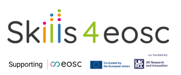

ATRIUM trainings: FAIR-by-Design Methodology for learning resources
Release Notes
1.0.0 (2025-03-13)
- Initial version created for the 2 sessions ATRIUM training
- Day 1 FAIR-by-Design Methodology Know How
- Day 2 FAIR-by-Design Hands-on
Webinar
Date/Time:
- Session 1: March 14th 2025, 10.00 - 12.30 CET
- Session 2: March 21st 2025, 10.00 - 16.00 CET
Location
- Zoom
- URL link room is sent to registered participants only via email
Training Description
This training program is designed to equip participants with the knowledge and practical skills to create and enhance learning materials using the FAIR-by-Design Methodology. It begins with a theoretical foundation, exploring the core principles of FAIR (Findable, Accessible, Interoperable, Reusable) and their application in the development of learning materials.
The program then transitions to a hands-on workshop, where participants assess and improve the FAIRness of existing learning materials, covering metadata enhancement, accessibility improvements, and reusability strategies. Through practical exercises, participants gain experience in applying the FAIR-by-Design stages to create sustainable and impactful educational resources.
Target audience: ATRIUM instructional designers
Expertise Level / Skill Level: Beginner
Primary Language: English
Access Cost: N
Prerequisites
- none
Duration
- 6.5 h
Training objectives
- By the end of the theoretical session, participants will be able to accurately define and explain the activities defines within the FAIR-by-Design Methodology and their relevance to developing FAIR learning resources
- participants will be able to apply the FAIR-by-Design stages to enhance the FAIRness of a provided learning material
Keywords
FAIR Principles, FAIR-by-Design Methodology, Learning Materials, Metadata, Findability, Accessibility, Interoperability, Reusability, Licensing, Version Control, Collaboration, Continuous Improvement
Agenda: Training Schedule
Session 1
| Date/Time | Topic |
|---|---|
| 14.03.2025 10.00-12.30 | FAIR-by-Design Methodology Deep Dive |
Session 2
| Date/Time | Topic |
|---|---|
| 21.03.2025 10.00-16.00 | Hands-on FAIRification of existing learning materials using the FAIR-by-Design Methodology |
Resources and Materials
- All necessary learning materials are provided via links on these pages
Certification Information
- no certification is offered for this training
Author(s)
- Sonja Filiposka
Trainer(s)
- Sonja Filiposka
 , Anastas Mishev , Bojana Koteska , Vojdan Kjorveziroski
, Anastas Mishev , Bojana Koteska , Vojdan Kjorveziroski
Contact information
- if you have any questions or comments please reach out to sonja.filiposka@finki.ukim.mk
License

This work is licensed under a Creative Commons Attribution 4.0 International License.
DOI
https://doi.org/10.5072/zenodo.1234567
Accessibility Mission
Skills4EOSC is dedicated to ensuring that all produced learning materials are accessible to as many visitors as possible regardless of their ability or technology. We have an active commitment to increasing our learning materials accessibility. The main standards that we aim to comply with are WCAG v.2.1 Level AA criteria and PDF/UA (ISO 14289).
Acknowledgement
These learning materials have been developed by following the FAIR-by-Design Methodology.
